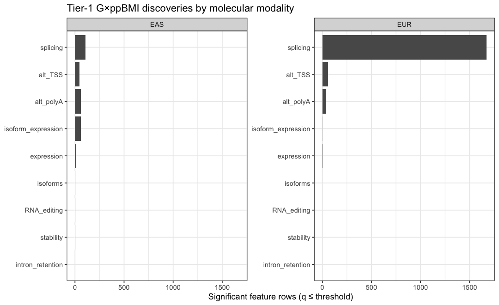
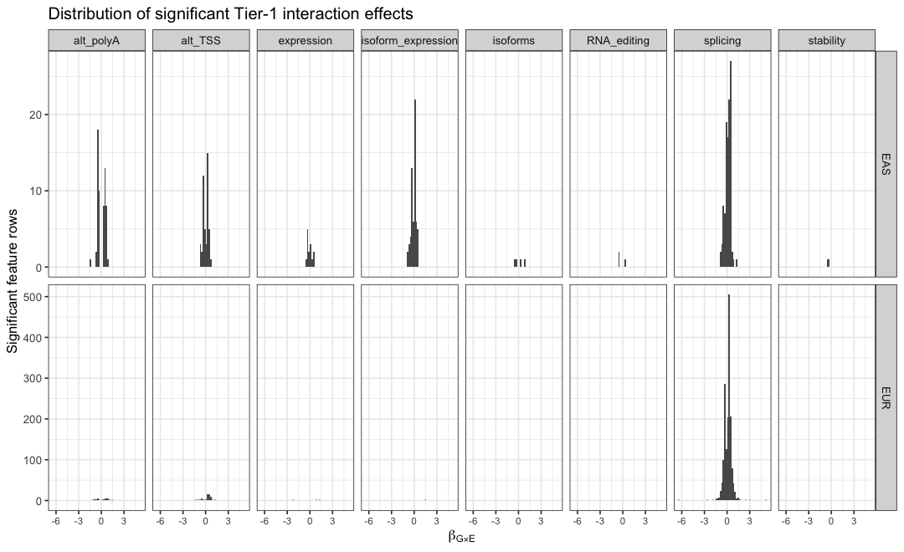
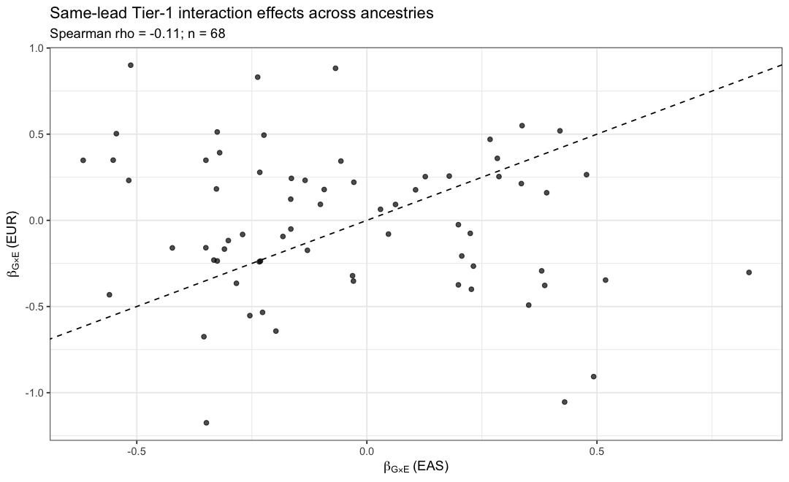
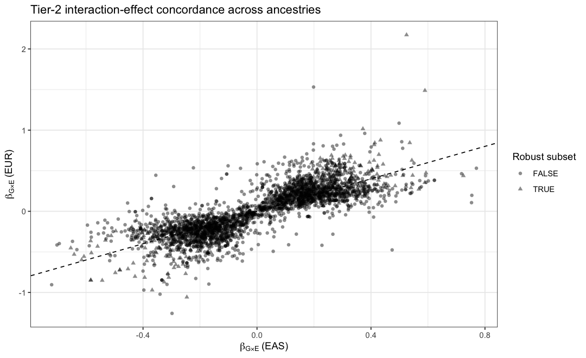

10 Genotype × pre-pregnancy BMI interactions
10.1 Executive summary
This report describes placenta genotype × maternal pre-pregnancy BMI (G×ppBMI) interaction mapping from Module 07 of the Placenta xQTL Atlas. It is a descriptive report of the supplied results, not a re-analysis of individual-level data.
The merged Tier-1 results contain 444,582 ancestry-specific feature
tests for the exact exposure label ppBMI. At q <= r params$tier1_q,
2,067 rows are significant, representing 2,064 molecular
features and approximately 1,449 Ensembl genes. Splicing accounts
for 86.2% of significant Tier-1 rows, with a particularly strong
contribution from EUR.
Cross-ancestry Tier-1 synthesis identifies 1,285 features with ACAT
feature-level q <= r params$tier1_q. Only 2 features are
significant in both ancestries, and the ancestry-specific lead variants
for those features are not the same. Thus, the strongest cross-ancestry
conclusion is evidence for recurrent G×ppBMI regulation of the same
molecular phenotype, not direct replication of an identical
variant-level interaction.
Tier 2 contains 35,090 prioritized phenotype-level results, of which
33,949 (96.7%) have q_meta <= r params$tier2_q. Because Tier 2 is
a hypothesis-driven follow-up set and many rows are supported by only
one ancestry, this near-saturated q-value yield should not be
interpreted as 33,949 independent discoveries. A deliberately stricter
sensitivity definition requiring two ancestries, concordant interaction
direction, nominal P < r params$ancestry_nominal_p in both ancestries,
and P_het >= r params$heterogeneity_p retains 664 features.
10.2 Inputs and provenance
input_table <- data.table(
object = names(paths),
path = unname(paths),
rows = c(nrow(tier1_all),
if (!is.na(paths["tier1_significant"])) nrow(read_tab(paths["tier1_significant"])) else NA_integer_,
nrow(tier1_meta_all), nrow(tier2_all), nrow(summary_all), nrow(status_all))
)
kable(input_table, caption = "G×E aggregate inputs used by this report.")| object | path | rows |
|---|---|---|
| tier1_results | /Users/stbresnahan/Documents/GitHub/Placenta_xQTL_atlas/reports/gxe/gxe_tier1_results.tsv.gz | 889164 |
| tier1_significant | /Users/stbresnahan/Documents/GitHub/Placenta_xQTL_atlas/reports/gxe/gxe_tier1_significant.tsv | 2067 |
| tier1_meta | /Users/stbresnahan/Documents/GitHub/Placenta_xQTL_atlas/reports/gxe/gxe_tier1_meta.tsv.gz | 273602 |
| tier2_results | /Users/stbresnahan/Documents/GitHub/Placenta_xQTL_atlas/reports/gxe/gxe_tier2_results.tsv.gz | 35090 |
| summary | /Users/stbresnahan/Documents/GitHub/Placenta_xQTL_atlas/reports/gxe/gxe_summary.tsv | 414 |
| run_status | /Users/stbresnahan/Documents/GitHub/Placenta_xQTL_atlas/reports/gxe/gxe_run_status.tsv | 434 |
G×E aggregate inputs used by this report.
The full aggregate files may contain chromosome-shard exposure labels
such as ppBMI.chr1. All scientific summaries in this report filter
on the exact merged label exposure == "r params$exposure" to avoid
double-counting shard and merged rows.
Module 07 README:
Tier-1 scan:
Tier-1 cross-ancestry synthesis:
Tier-2 prioritized scan:
10.3 Analysis framework
For each molecular phenotype, Module 07 fits a cis interaction model of the form
Y = βGG + βEE + βG × E(G × E) + *Z**γ + ϵ*,
where E is standardized ppBMI, G is genotype dosage, and Z contains the optimized molecular-QTL covariates. The parameter of interest is βG × E: the change in the genotype effect per one-SD increase in ppBMI.
Tier 1 is ancestry-specific discovery with adaptive phenotype-level permutation and FDR control within ancestry × modality × exposure. Cross-ancestry synthesis is performed after ancestry-specific discovery. When ancestry lead variants differ, the repository deliberately labels the feature as discordant-lead and does not claim that the IVW statistic represents the same variant-level test.
Tier 2 is a hypothesis-driven scan of phenotypes prioritized from downstream genetic evidence (colocalization and significant isoTWAS/gene-level TWAS criteria in the current implementation). It performs nominal cis interaction testing within each ancestry, then variant-level IVW meta-analysis where possible, retains the best meta-analysis variant for each prioritized phenotype, and applies BH correction across the prioritized set.
10.4 Pipeline completion
status_display <- copy(run_status)
status_display <- status_display[order(factor(component, c("tier1","tier1_meta","tier2")),
ancestry, modality)]
kable(status_display, caption = "Module-07 ppBMI run status.")| component | ancestry | modality | exposure | status | n_tested | n_sig |
|---|---|---|---|---|---|---|
| tier1 | EAS | RNA_editing | ppBMI | DONE | 3120 | 3 |
| tier1 | EAS | alt_TSS | ppBMI | DONE | 29057 | 46 |
| tier1 | EAS | alt_polyA | ppBMI | DONE | 25552 | 61 |
| tier1 | EAS | expression | ppBMI | DONE | 12568 | 14 |
| tier1 | EAS | intron_retention | ppBMI | DONE | 3812 | 0 |
| tier1 | EAS | isoform_expression | ppBMI | DONE | 36441 | 61 |
| tier1 | EAS | isoforms | ppBMI | DONE | 20673 | 4 |
| tier1 | EAS | splicing | ppBMI | DONE | 56149 | 109 |
| tier1 | EAS | stability | ppBMI | DONE | 4493 | 2 |
| tier1 | EUR | RNA_editing | ppBMI | DONE | 17472 | 0 |
| tier1 | EUR | alt_TSS | ppBMI | DONE | 35773 | 57 |
| tier1 | EUR | alt_polyA | ppBMI | DONE | 31816 | 33 |
| tier1 | EUR | expression | ppBMI | DONE | 13128 | 3 |
| tier1 | EUR | intron_retention | ppBMI | DONE | 10341 | 0 |
| tier1 | EUR | isoform_expression | ppBMI | DONE | 39514 | 1 |
| tier1 | EUR | isoforms | ppBMI | DONE | 21884 | 0 |
| tier1 | EUR | splicing | ppBMI | DONE | 75424 | 1673 |
| tier1 | EUR | stability | ppBMI | DONE | 7365 | 0 |
| tier1_meta | cross | RNA_editing | ppBMI | DONE | 17479 | 1 |
| tier1_meta | cross | alt_TSS | ppBMI | DONE | 36096 | 65 |
| tier1_meta | cross | alt_polyA | ppBMI | DONE | 32036 | 82 |
| tier1_meta | cross | expression | ppBMI | DONE | 13241 | 9 |
| tier1_meta | cross | intron_retention | ppBMI | DONE | 11330 | 0 |
| tier1_meta | cross | isoform_expression | ppBMI | DONE | 43818 | 33 |
| tier1_meta | cross | isoforms | ppBMI | DONE | 27203 | 2 |
| tier1_meta | cross | splicing | ppBMI | DONE | 84909 | 1091 |
| tier1_meta | cross | stability | ppBMI | DONE | 7490 | 2 |
| tier2 | cross | RNA_editing | ppBMI | DONE | 2910 | 2767 |
| tier2 | cross | alt_TSS | ppBMI | DONE | 4655 | 4548 |
| tier2 | cross | alt_polyA | ppBMI | DONE | 4016 | 3890 |
| tier2 | cross | expression | ppBMI | DONE | 1297 | 1295 |
| tier2 | cross | intron_retention | ppBMI | DONE | 1488 | 1382 |
| tier2 | cross | isoform_expression | ppBMI | DONE | 5339 | 5215 |
| tier2 | cross | isoforms | ppBMI | DONE | 3347 | 3258 |
| tier2 | cross | splicing | ppBMI | DONE | 11234 | 10816 |
| tier2 | cross | stability | ppBMI | DONE | 804 | 778 |
Module-07 ppBMI run status.
10.5 Tier 1: ancestry-specific discovery
10.5.1 Yield by ancestry and modality
tier1_yield <- tier1[, .(
n_tested = .N,
n_sig = sum(is.finite(qval) & qval <= params$tier1_q),
min_q = suppressWarnings(min(qval, na.rm = TRUE))
), by = .(ancestry, modality)]
tier1_yield[!is.finite(min_q), min_q := NA_real_]
tier1_yield[, sig_rate := n_sig / n_tested]
setorder(tier1_yield, ancestry, -n_sig)
fwrite(tier1_yield, file.path(params$tables_dir, "tier1_yield_by_ancestry_modality.tsv"), sep = "\t")
tier1_yield_print <- copy(tier1_yield)
tier1_yield_print[, sig_rate := fmt_pct(sig_rate, 2)]
tier1_yield_print[, min_q := fmt_p(min_q)]
kable(tier1_yield_print, caption = "Tier-1 discovery yield by ancestry and modality.")| ancestry | modality | n_tested | n_sig | min_q | sig_rate |
|---|---|---|---|---|---|
| EAS | splicing | 56149 | 109 | 5.569e-14 | 0.19% |
| EAS | alt_polyA | 25552 | 61 | 1.980e-20 | 0.24% |
| EAS | isoform_expression | 36441 | 61 | 5.863e-08 | 0.17% |
| EAS | alt_TSS | 29057 | 46 | 3.803e-15 | 0.16% |
| EAS | expression | 12568 | 14 | 3.851e-04 | 0.11% |
| EAS | isoforms | 20673 | 4 | 2.626e-03 | 0.02% |
| EAS | RNA_editing | 3120 | 3 | 2.087e-03 | 0.10% |
| EAS | stability | 4493 | 2 | 1.296e-02 | 0.04% |
| EAS | intron_retention | 3812 | 0 | 5.302e-01 | 0.00% |
| EUR | splicing | 75424 | 1673 | 1.812e-20 | 2.22% |
| EUR | alt_TSS | 35773 | 57 | 5.239e-16 | 0.16% |
| EUR | alt_polyA | 31816 | 33 | 2.300e-05 | 0.10% |
| EUR | expression | 13128 | 3 | 1.231e-04 | 0.02% |
| EUR | isoform_expression | 39514 | 1 | 2.593e-03 | 0.00% |
| EUR | RNA_editing | 17472 | 0 | 7.140e-01 | 0.00% |
| EUR | intron_retention | 10341 | 0 | 1.763e-01 | 0.00% |
| EUR | isoforms | 21884 | 0 | 2.182e-01 | 0.00% |
| EUR | stability | 7365 | 0 | 2.049e-01 | 0.00% |
Tier-1 discovery yield by ancestry and modality.
p1 <- ggplot(tier1_yield, aes(x = reorder(modality, n_sig), y = n_sig)) +
geom_col() +
coord_flip() +
facet_wrap(~ ancestry, scales = "free_y") +
labs(x = NULL, y = "Significant feature rows (q ≤ threshold)",
title = "Tier-1 G×ppBMI discoveries by molecular modality") +
theme_bw(base_size = 11)
print(p1)
ggsave(file.path(params$figures_dir, "tier1_significant_by_modality.png"), p1,
width = 9, height = 5.5, dpi = 160)The ancestry imbalance is substantial. This report therefore avoids interpreting a larger EUR count as evidence that ppBMI-dependent regulation is intrinsically more common in EUR; ancestry-specific sample size, allele-frequency support, phenotype variance, lead-variant selection, and modality-specific power can all contribute.
10.5.2 Interaction-effect distribution
p2 <- ggplot(tier1_sig, aes(x = b_gi)) +
geom_histogram(bins = 60) +
facet_grid(ancestry ~ modality, scales = "free_y") +
labs(x = expression(beta[G %*% E]),
y = "Significant feature rows",
title = "Distribution of significant Tier-1 interaction effects") +
theme_bw(base_size = 10) +
theme(axis.text.x = element_text(size = 7))
print(p2)
ggsave(file.path(params$figures_dir, "tier1_interaction_effects.png"), p2,
width = 11, height = 7, dpi = 160)A positive βG × E means that the allelic effect on the molecular phenotype becomes more positive (or less negative) as standardized ppBMI increases. It does not mean that ppBMI itself increases the molecular phenotype.
10.5.3 Strongest Tier-1 signals
tier1_top <- tier1_sig[order(qval, pval_beta)][1:min(params$top_n, .N),
.(gene_symbol, gene_id, ancestry, modality, phenotype_id, variant_id,
b_gi, b_gi_se, pval_beta, qval, af, ma_count)]
fwrite(tier1_top, file.path(params$tables_dir, "tier1_top_signals.tsv"), sep = "\t")
tier1_top_print <- copy(tier1_top)
tier1_top_print[, `:=`(pval_beta = fmt_p(pval_beta), qval = fmt_p(qval),
b_gi = round(b_gi, 4), b_gi_se = round(b_gi_se, 4))]
kable(tier1_top_print, caption = paste0("Top ", nrow(tier1_top), " Tier-1 G×ppBMI signals."))| gene_symbol | gene_id | ancestry | modality | phenotype_id | variant_id | b_gi | b_gi_se | pval_beta | qval | af | ma_count |
|---|---|---|---|---|---|---|---|---|---|---|---|
| CALR | ENSG00000179218 | EUR | splicing | ENSG00000179218.15_chr19_12940452_12940592+ | 19:12511179:G:A | 1.0283 | 0.0476 | 2.403e-25 | 1.812e-20 | 0.0601504 | 16 |
| CFLAR | ENSG00000003402 | EAS | alt_polyA | ENSG00000003402.21__grp_2_downstream_HPLRT_26e0529c448 | 2:200617744:A:G | 0.3050 | 0.0229 | 7.750e-25 | 1.980e-20 | 0.1054545 | 58 |
| SLC25A36 | ENSG00000114120 | EUR | splicing | ENSG00000114120.14_chr3_140959540_140970927+ | 3:140456911:C:T | 0.5374 | 0.0265 | 2.604e-24 | 9.821e-20 | 0.0530303 | 14 |
| NA | ENSG00000148985 | EUR | splicing | ENSG00000148985.20_chr11_3823740_3823883+ | 11:4495346:C:T | 0.5495 | 0.0274 | 2.617e-23 | 6.579e-19 | 0.0530303 | 14 |
| NA | ENSG00000146802 | EUR | splicing | ENSG00000146802.13_chr7_112778412_112783698- | 7:111918354:A:G | 0.2781 | 0.0153 | 2.497e-22 | 4.708e-18 | 0.0746269 | 20 |
| NA | ENSG00000113658 | EUR | splicing | ENSG00000113658.18_chr5_136152729_136153592+ | 5:135335075:A:G | 0.2821 | 0.0158 | 7.396e-22 | 1.116e-17 | 0.0643939 | 17 |
| SGMS1 | ENSG00000198964 | EUR | splicing | ENSG00000198964.14_chr10_50466932_50508634- | 10:49708438:A:G | -0.6390 | 0.0358 | 2.098e-21 | 2.638e-17 | 0.9259259 | 20 |
| CALR | ENSG00000179218 | EUR | splicing | ENSG00000179218.15_chr19_12940452_12940541+ | 19:12511179:G:A | -1.0451 | 0.0609 | 1.206e-20 | 1.300e-16 | 0.0601504 | 16 |
| MYL6 | ENSG00000092841 | EUR | alt_TSS | ENSG00000092841.19__grp_1_upstream_ENST00000549017.5 | 12:56904987:G:C | 0.6483 | 0.0430 | 1.465e-20 | 5.239e-16 | 0.0671642 | 18 |
| KLHDC4 | ENSG00000104731 | EUR | splicing | ENSG00000104731.14_chr16_87696656_87708350- | 16:88448933:A:G | 0.5735 | 0.0351 | 1.673e-19 | 1.578e-15 | 0.0530303 | 14 |
| NA | ENSG00000154645 | EAS | alt_TSS | ENSG00000154645.14__grp_1_upstream_HPLRT_9a484dedc14 | 21:17562133:A:C | -0.1768 | 0.0149 | 1.309e-19 | 3.803e-15 | 0.0711679 | 39 |
| NA | ENSG00000138036 | EAS | alt_TSS | ENSG00000138036.18__grp_1_upstream_ENST00000378587.3 | 2:44351759:T:C | 0.1253 | 0.0107 | 1.263e-18 | 1.835e-14 | 0.2173913 | 120 |
| ALDH3B2 | ENSG00000132746 | EAS | splicing | ENSG00000132746.16_chr11_67667635_67674437- | 11:68306575:G:A | 0.4547 | 0.0411 | 9.918e-19 | 5.569e-14 | 0.0507519 | 27 |
| NA | ENSG00000146826 | EUR | alt_TSS | ENSG00000146826.17__grp_2_upstream_HPLRT_eafd7eb9d4d | 7:99842869:T:G | 0.3235 | 0.0238 | 4.506e-18 | 8.060e-14 | 0.0814815 | 22 |
| PXYLP1 | ENSG00000155893 | EUR | splicing | ENSG00000155893.13_chr3_141232435_141260123+ | 3:140456911:C:T | 0.4477 | 0.0311 | 1.647e-17 | 1.253e-13 | 0.0530303 | 14 |
| NA | ENSG00000223609 | EUR | splicing | ENSG00000223609.11_chr11_5225657_5234342- | 11:6195922:A:G | 0.9011 | 0.0585 | 1.793e-17 | 1.253e-13 | 0.0522388 | 14 |
| NA | ENSG00000244734 | EUR | splicing | ENSG00000244734.4_chr11_5225657_5234342- | 11:6195922:A:G | 0.9011 | 0.0585 | 1.828e-17 | 1.253e-13 | 0.0522388 | 14 |
| NA | ENSG00000107485 | EUR | splicing | ENSG00000107485.18_chr10_8054891_8055510+ | 10:7219600:A:G | -0.3870 | 0.0271 | 2.554e-17 | 1.605e-13 | 0.9341086 | 18 |
| NA | ENSG00000115183 | EUR | splicing | ENSG00000115183.15_chr2_159001189_159060017+ | 2:158305365:G:A | 0.4344 | 0.0313 | 3.299e-16 | 1.914e-12 | 0.0634328 | 17 |
| NA | ENSG00000116586 | EAS | alt_TSS | ENSG00000116586.12__grp_1_upstream_HPLRT_d154cb00bb8 | 1:156372826:CTG:C | 0.1784 | 0.0171 | 2.531e-16 | 2.451e-12 | 0.1733577 | 95 |
| MLH3 | ENSG00000119684 | EUR | splicing | ENSG00000119684.16_chr14_75053659_75069210- | 14:74764400:G:A | 0.3560 | 0.0279 | 1.416e-15 | 7.628e-12 | 0.0522388 | 14 |
| NA | ENSG00000146802 | EUR | splicing | ENSG00000146802.13_chr7_112767744_112790160- | 7:111918354:A:G | 0.2779 | 0.0223 | 1.658e-15 | 8.335e-12 | 0.0746269 | 20 |
| NA | ENSG00000177030 | EUR | splicing | ENSG00000177030.19_chr11_646555_653962- | 11:1082227:G:T | 0.6822 | 0.0511 | 1.943e-15 | 9.160e-12 | 0.0620155 | 16 |
| NA | ENSG00000107551 | EUR | splicing | ENSG00000107551.21_chr10_44982663_44984813+ | 10:44914982:A:G | -0.3044 | 0.0240 | 2.330e-15 | 1.034e-11 | 0.9457365 | 15 |
| NA | ENSG00000152620 | EUR | splicing | ENSG00000152620.13_chr5_36207265_36207366- | 5:35619633:C:T | 0.4480 | 0.0350 | 2.739e-15 | 1.148e-11 | 0.0538462 | 14 |
Top 25 Tier-1 G×ppBMI signals.
10.5.4 Recurrent genes and multi-feature signals
tier1_recurrent <- tier1_sig[, .(
n_significant_rows = .N,
n_features = uniqueN(phenotype_id),
n_modalities = uniqueN(modality),
modalities = paste(sort(unique(modality)), collapse = ";"),
n_ancestries = uniqueN(ancestry),
ancestries = paste(sort(unique(ancestry)), collapse = ";"),
min_q = min(qval, na.rm = TRUE),
max_abs_beta_gxe = max(abs(b_gi), na.rm = TRUE)
), by = .(gene_id, gene_symbol)]
setorder(tier1_recurrent, -n_features, min_q)
fwrite(tier1_recurrent, file.path(params$tables_dir, "tier1_recurrent_genes.tsv"), sep = "\t")
rec_print <- tier1_recurrent[1:min(params$top_n, .N)]
rec_print[, `:=`(min_q = fmt_p(min_q), max_abs_beta_gxe = round(max_abs_beta_gxe, 3))]
kable(rec_print, caption = "Most recurrent genes among significant Tier-1 feature rows.")| gene_id | gene_symbol | n_significant_rows | n_features | n_modalities | modalities | n_ancestries | ancestries | min_q | max_abs_beta_gxe |
|---|---|---|---|---|---|---|---|---|---|
| ENSG00000149043 | SYT8 | 11 | 11 | 1 | splicing | 2 | EAS;EUR | 7.822e-09 | 0.464 |
| ENSG00000179818 | ASPRV1 | 9 | 9 | 1 | splicing | 1 | EUR | 2.296e-09 | 0.704 |
| ENSG00000113494 | PRLR | 7 | 7 | 1 | splicing | 1 | EUR | 6.751e-11 | 0.560 |
| ENSG00000107104 | NA | 7 | 7 | 1 | splicing | 1 | EUR | 1.063e-08 | 0.659 |
| HPLRG_9345bdedd74 | NA | 7 | 7 | 1 | splicing | 2 | EAS;EUR | 1.111e-05 | 1.285 |
| ENSG00000174915 | NA | 7 | 7 | 1 | splicing | 1 | EUR | 2.645e-05 | 0.382 |
| ENSG00000107099 | NA | 7 | 7 | 1 | splicing | 1 | EUR | 7.511e-05 | 0.542 |
| ENSG00000219626 | NA | 7 | 7 | 1 | splicing | 1 | EUR | 1.523e-04 | 0.597 |
| ENSG00000254233 | NA | 7 | 7 | 1 | splicing | 1 | EUR | 8.824e-04 | 0.196 |
| ENSG00000133466 | NA | 6 | 6 | 2 | alt_TSS;splicing | 1 | EUR | 3.416e-06 | 0.391 |
| HPLRG_8191f089100 | NA | 6 | 6 | 1 | splicing | 1 | EUR | 1.144e-05 | 1.285 |
| ENSG00000105865 | NA | 5 | 5 | 1 | splicing | 1 | EUR | 4.474e-07 | 0.520 |
| ENSG00000100325 | NA | 5 | 5 | 1 | splicing | 1 | EUR | 3.662e-06 | 0.545 |
| ENSG00000081154 | PCNP | 5 | 5 | 2 | isoform_expression;splicing | 2 | EAS;EUR | 4.165e-06 | 0.511 |
| ENSG00000112078 | NA | 5 | 5 | 1 | splicing | 1 | EUR | 1.942e-05 | 0.398 |
| ENSG00000154309 | NA | 5 | 5 | 1 | splicing | 1 | EUR | 2.610e-05 | 0.199 |
| ENSG00000196967 | NA | 5 | 5 | 1 | splicing | 1 | EUR | 7.314e-04 | 0.373 |
| ENSG00000114120 | SLC25A36 | 4 | 4 | 1 | splicing | 1 | EUR | 9.821e-20 | 0.537 |
| ENSG00000198964 | SGMS1 | 4 | 4 | 1 | splicing | 1 | EUR | 2.638e-17 | 0.639 |
| ENSG00000107485 | NA | 4 | 4 | 1 | splicing | 1 | EUR | 1.605e-13 | 0.555 |
| ENSG00000115183 | NA | 4 | 4 | 1 | splicing | 1 | EUR | 1.914e-12 | 0.568 |
| ENSG00000223482 | NA | 4 | 4 | 1 | splicing | 2 | EAS;EUR | 3.411e-09 | 1.110 |
| ENSG00000292979 | NA | 4 | 4 | 1 | splicing | 1 | EUR | 8.497e-09 | 0.368 |
| ENSG00000145604 | SKP2 | 4 | 4 | 2 | isoform_expression;splicing | 2 | EAS;EUR | 8.752e-09 | 0.684 |
| ENSG00000132669 | NA | 4 | 4 | 1 | splicing | 1 | EUR | 4.540e-08 | 0.751 |
Most recurrent genes among significant Tier-1 feature rows.
Genes with multiple significant molecular phenotypes are useful prioritization candidates, but counts are not independent because related isoforms/splicing events can share variants and molecular signal.
10.6 Cross-ancestry Tier-1 synthesis
10.6.1 Scope of cross-ancestry testing
meta_scope <- tier1_meta[, .N, by = .(scope, n_ancestries, lead_concordant)]
setorder(meta_scope, -N)
kable(meta_scope, caption = "Cross-ancestry Tier-1 synthesis by overlap and lead-variant concordance.")| scope | n_ancestries | lead_concordant | N |
|---|---|---|---|
| shared_discordant_lead | 2 | FALSE | 170912 |
| ancestry_only | 1 | FALSE | 102622 |
| shared_concordant_lead | 2 | TRUE | 68 |
Cross-ancestry Tier-1 synthesis by overlap and lead-variant concordance.
meta_modality <- tier1_meta[, .(
n_features = .N,
n_two_ancestry = sum(n_ancestries == 2),
n_same_lead = sum(lead_concordant %in% TRUE, na.rm = TRUE),
n_sig_any_ancestry = sum(significant_any_ancestry %in% TRUE, na.rm = TRUE),
n_sig_both_ancestries = sum(significant_all_ancestries %in% TRUE, na.rm = TRUE),
n_acat_q05 = sum(is.finite(q_feature_acat) & q_feature_acat <= params$tier1_q)
), by = modality]
setorder(meta_modality, -n_acat_q05)
fwrite(meta_modality, file.path(params$tables_dir, "tier1_cross_ancestry_summary.tsv"), sep = "\t")
kable(meta_modality, caption = "Cross-ancestry feature synthesis by modality.")| modality | n_features | n_two_ancestry | n_same_lead | n_sig_any_ancestry | n_sig_both_ancestries | n_acat_q05 |
|---|---|---|---|---|---|---|
| splicing | 84909 | 46664 | 19 | 1780 | 2 | 1091 |
| alt_polyA | 32036 | 25332 | 9 | 94 | 0 | 82 |
| alt_TSS | 36096 | 28734 | 13 | 103 | 0 | 65 |
| isoform_expression | 43818 | 32137 | 15 | 62 | 0 | 33 |
| expression | 13241 | 12455 | 2 | 17 | 0 | 9 |
| isoforms | 27203 | 15354 | 7 | 4 | 0 | 2 |
| stability | 7490 | 4368 | 1 | 2 | 0 | 2 |
| RNA_editing | 17479 | 3113 | 2 | 3 | 0 | 1 |
| intron_retention | 11330 | 2823 | 0 | 0 | 0 | 0 |
Cross-ancestry feature synthesis by modality.
Only 68 shared features have the same ancestry lead variant. Consequently, the feature-level ACAT statistic is the most broadly applicable cross-ancestry evidence measure in this archive; exact IVW effect-size meta-analysis applies only to the same-variant subset.
10.6.2 Features significant in both ancestries
both_anc <- tier1_meta[significant_all_ancestries %in% TRUE,
.(gene_symbol, gene_id, modality, phenotype_id,
variant_id_EAS, b_gi_EAS, qval_EAS,
variant_id_EUR, b_gi_EUR, qval_EUR,
lead_concordant, p_feature_acat, q_feature_acat)]
fwrite(both_anc, file.path(params$tables_dir, "tier1_significant_both_ancestries.tsv"), sep = "\t")
both_print <- copy(both_anc)
for (cc in intersect(c("qval_EAS","qval_EUR","p_feature_acat","q_feature_acat"), names(both_print))) {
set(both_print, j = cc, value = fmt_p(both_print[[cc]]))
}
kable(both_print, caption = "Tier-1 molecular phenotypes significant in both EAS and EUR.")| gene_symbol | gene_id | modality | phenotype_id | variant_id_EAS | b_gi_EAS | qval_EAS | variant_id_EUR | b_gi_EUR | qval_EUR | lead_concordant | p_feature_acat | q_feature_acat |
|---|---|---|---|---|---|---|---|---|---|---|---|---|
| TAF6 | ENSG00000106290 | splicing | ENSG00000106290.16_chr7_100114268_100116514- | 7:100004356:CTG:C | 0.2701131 | 7.133e-03 | 7:100932474:A:C | 0.2334036 | 1.809e-02 | FALSE | 7.272e-06 | 1.013e-03 |
| MRAS | ENSG00000158186 | splicing | ENSG00000158186.13_chr3_138349032_138349247+ | 3:137722650:T:C | 0.4462094 | 2.304e-02 | 3:138439765:T:C | -0.2862002 | 2.424e-03 | FALSE | 2.100e-05 | 2.356e-03 |
Tier-1 molecular phenotypes significant in both EAS and EUR.
The supplied ppBMI results contain only 2 feature(s) significant in both ancestries. For these features, the ancestry-specific lead variants differ. In particular, effect-direction comparison must not be treated as allelic replication when different variants are being compared.
10.6.3 Same-lead effect concordance
same_lead <- tier1_meta[
lead_concordant %in% TRUE &
is.finite(b_gi_EAS) & is.finite(b_gi_EUR)
]
if (nrow(same_lead) > 1) {
rho <- suppressWarnings(cor(same_lead$b_gi_EAS, same_lead$b_gi_EUR,
method = "spearman", use = "complete.obs"))
p3 <- ggplot(same_lead, aes(x = b_gi_EAS, y = b_gi_EUR)) +
geom_point(alpha = 0.7) +
geom_abline(slope = 1, intercept = 0, linetype = 2) +
labs(x = expression(beta[G %*% E]~"(EAS)"),
y = expression(beta[G %*% E]~"(EUR)"),
title = "Same-lead Tier-1 interaction effects across ancestries",
subtitle = paste0("Spearman rho = ", round(rho, 2), "; n = ", nrow(same_lead))) +
theme_bw(base_size = 11)
print(p3)
ggsave(file.path(params$figures_dir, "tier1_same_lead_concordance.png"), p3,
width = 7, height = 6, dpi = 160)
}
10.7 Tier 2: genetically prioritized follow-up
Tier 2 is deliberately different from Tier 1. It is not an independent genome-wide discovery layer: it tests molecular phenotypes prioritized from other genetic evidence and performs a focused cis G×ppBMI scan.
10.7.1 Overall yield
tier2_yield <- tier2[, .(
n_prioritized = .N,
n_q05 = sum(is.finite(q_meta) & q_meta <= params$tier2_q),
n_two_ancestry = sum(n_ancestries == 2),
n_one_ancestry = sum(n_ancestries == 1)
), by = modality]
tier2_yield[, q05_rate := n_q05 / n_prioritized]
setorder(tier2_yield, -n_q05)
fwrite(tier2_yield, file.path(params$tables_dir, "tier2_yield_by_modality.tsv"), sep = "\t")
tier2_yield_print <- copy(tier2_yield)
tier2_yield_print[, q05_rate := fmt_pct(q05_rate, 1)]
kable(tier2_yield_print, caption = "Tier-2 prioritized G×ppBMI results by modality.")| modality | n_prioritized | n_q05 | n_two_ancestry | n_one_ancestry | q05_rate |
|---|---|---|---|---|---|
| splicing | 11234 | 10816 | 907 | 10327 | 96.3% |
| isoform_expression | 5339 | 5215 | 490 | 4849 | 97.7% |
| alt_TSS | 4655 | 4548 | 497 | 4158 | 97.7% |
| alt_polyA | 4016 | 3890 | 400 | 3616 | 96.9% |
| isoforms | 3347 | 3258 | 211 | 3136 | 97.3% |
| RNA_editing | 2910 | 2767 | 103 | 2807 | 95.1% |
| intron_retention | 1488 | 1382 | 54 | 1434 | 92.9% |
| expression | 1297 | 1295 | 157 | 1140 | 99.8% |
| stability | 804 | 778 | 74 | 730 | 96.8% |
Tier-2 prioritized G×ppBMI results by modality.
A notable QC feature is that 33,949 of 35,090 prioritized phenotypes
have q_meta <= r params$tier2_q. This very high yield should be
interpreted cautiously:
- the set is genetically pre-prioritized rather than genome-wide;
- most Tier-2 phenotype rows have support from only one ancestry; and
- the finalizer computes a normal-theory IVW z-test from βG × E/*S**E*, whereas the ancestry-level nominal interaction p-values are based on the within-ancestry regression test. For one-ancestry rows these need not be numerically identical, especially with finite degrees of freedom.
For these reasons, this report emphasizes the two-ancestry sensitivity subset below rather than equating all Tier-2 q-values with independent replicated discoveries.
10.7.2 Two-ancestry evidence hierarchy
tier2_support <- data.table(
criterion = c(
"Two ancestries tested",
paste0("Two ancestries + q_meta <= ", params$tier2_q),
"Two ancestries + same interaction direction",
paste0("Two ancestries + nominal P < ", params$ancestry_nominal_p, " in both"),
paste0("Two ancestries + P_het >= ", params$heterogeneity_p),
"Robust combined sensitivity definition"
),
n = c(
nrow(tier2_two),
tier2_two[is.finite(q_meta) & q_meta <= params$tier2_q, .N],
tier2_two[same_direction %in% TRUE, .N],
tier2_two[both_nominal %in% TRUE, .N],
tier2_two[low_heterogeneity %in% TRUE, .N],
nrow(tier2_robust)
)
)
kable(tier2_support, caption = "Tier-2 two-ancestry evidence hierarchy.")| criterion | n |
|---|---|
| Two ancestries tested | 2893 |
| Two ancestries + q_meta <= 0.05 | 2878 |
| Two ancestries + same interaction direction | 2751 |
| Two ancestries + nominal P < 0.05 in both | 688 |
| Two ancestries + P_het >= 0.05 | 2759 |
| Robust combined sensitivity definition | 664 |
Tier-2 two-ancestry evidence hierarchy.
The robust sensitivity subset requires all of the following:
q_meta <= r params$tier2_q;- both ancestries tested;
- the same sign of βG × E;
- nominal interaction
P < r params$ancestry_nominal_pin both ancestries; and - heterogeneity
P >= r params$heterogeneity_p.
This is a reporting sensitivity definition, not a new production pipeline threshold.
robust_modality <- tier2_robust[, .(
n_robust = .N,
n_genes = uniqueN(gene_id)
), by = modality]
setorder(robust_modality, -n_robust)
kable(robust_modality, caption = "Robust two-ancestry Tier-2 sensitivity subset by modality.")| modality | n_robust | n_genes |
|---|---|---|
| splicing | 166 | 132 |
| isoform_expression | 124 | 116 |
| alt_TSS | 112 | 85 |
| alt_polyA | 100 | 75 |
| isoforms | 61 | 58 |
| expression | 41 | 41 |
| RNA_editing | 26 | 14 |
| stability | 19 | 19 |
| intron_retention | 15 | 14 |
Robust two-ancestry Tier-2 sensitivity subset by modality.
if (nrow(tier2_two)) {
p4 <- ggplot(tier2_two, aes(x = b_gi_EAS, y = b_gi_EUR,
shape = robust_two_ancestry)) +
geom_point(alpha = 0.45) +
geom_abline(slope = 1, intercept = 0, linetype = 2) +
labs(x = expression(beta[G %*% E]~"(EAS)"),
y = expression(beta[G %*% E]~"(EUR)"),
shape = "Robust subset",
title = "Tier-2 interaction-effect concordance across ancestries") +
theme_bw(base_size = 11)
print(p4)
ggsave(file.path(params$figures_dir, "tier2_two_ancestry_concordance.png"), p4,
width = 7.5, height = 6.2, dpi = 160)
}
10.7.3 Strongest robust Tier-2 features
tier2_robust_top <- tier2_robust[order(q_meta, p_meta)][1:min(params$top_n, .N),
.(gene_symbol, gene_id, modality, phenotype_id, variant_id,
beta_meta, se_meta, p_meta, q_meta, p_het, i2,
b_gi_EAS, pval_EAS, b_gi_EUR, pval_EUR)]
fwrite(tier2_robust_top, file.path(params$tables_dir, "tier2_robust_top_signals.tsv"), sep = "\t")
tier2_robust_print <- copy(tier2_robust_top)
for (cc in intersect(c("p_meta","q_meta","p_het","pval_EAS","pval_EUR"), names(tier2_robust_print))) {
set(tier2_robust_print, j = cc, value = fmt_p(tier2_robust_print[[cc]]))
}
for (cc in intersect(c("beta_meta","se_meta","i2","b_gi_EAS","b_gi_EUR"), names(tier2_robust_print))) {
set(tier2_robust_print, j = cc, value = round(tier2_robust_print[[cc]], 4))
}
kable(tier2_robust_print, caption = "Top robust two-ancestry Tier-2 G×ppBMI signals.")| gene_symbol | gene_id | modality | phenotype_id | variant_id | beta_meta | se_meta | p_meta | q_meta | p_het | i2 | b_gi_EAS | pval_EAS | b_gi_EUR | pval_EUR |
|---|---|---|---|---|---|---|---|---|---|---|---|---|---|---|
| NA | ENSG00000134283 | splicing | ENSG00000134283.18_chr12_42355222_42387456+ | 12:42449277:T:C | -0.2636 | 0.0492 | 8.564e-08 | 5.866e-06 | 5.739e-01 | 0.0000 | -0.3524 | 3.413e-02 | -0.2550 | 6.853e-06 |
| NA | ENSG00000169592 | splicing | ENSG00000169592.15_chr16_30004657_30004750+ | 16:29874126:A:G | 0.0851 | 0.0162 | 1.594e-07 | 9.629e-06 | 8.778e-01 | 0.0000 | 0.0880 | 4.252e-04 | 0.0829 | 3.069e-04 |
| NA | ENSG00000131746 | splicing | ENSG00000131746.13_chr17_40488969_40490194- | 17:40981793:G:A | 0.2965 | 0.0590 | 4.983e-07 | 2.372e-05 | 6.804e-02 | 0.6997 | 0.2479 | 1.597e-04 | 0.5351 | 4.373e-04 |
| NA | ENSG00000204070 | splicing | ENSG00000204070.10_chr20_45407067_45408460+ | 20:45555859:A:G | 0.1125 | 0.0224 | 5.367e-07 | 2.502e-05 | 7.163e-01 | 0.0000 | 0.1340 | 3.507e-02 | 0.1094 | 2.719e-05 |
| NA | ENSG00000172775 | splicing | ENSG00000172775.18_chr16_57173869_57175539- | 16:56563515:G:A | -0.3355 | 0.0680 | 7.975e-07 | 3.356e-05 | 4.205e-01 | 0.0000 | -0.3837 | 3.157e-05 | -0.2733 | 1.018e-02 |
| NA | ENSG00000035403 | splicing | ENSG00000035403.18_chr10_74109156_74114184+ | 10:74859050:C:T | -0.5507 | 0.1163 | 2.207e-06 | 7.064e-05 | 2.834e-01 | 0.1311 | -0.4527 | 2.441e-03 | -0.7097 | 3.890e-04 |
| NA | ENSG00000003509 | alt_polyA | ENSG00000003509.16__grp_2_downstream_HPLRT_52c6aeec274 | 2:37314986:CACA:C | 0.3216 | 0.0634 | 3.979e-07 | 7.263e-05 | 8.034e-01 | 0.0000 | 0.3333 | 3.404e-05 | 0.3002 | 5.742e-03 |
| NA | ENSG00000148120 | splicing | ENSG00000148120.19_chr9_95045673_95060694+ | 9:93965452:G:C | -0.1430 | 0.0306 | 2.979e-06 | 8.949e-05 | 7.524e-01 | 0.0000 | -0.1662 | 3.759e-02 | -0.1390 | 9.610e-05 |
| NA | ENSG00000003509 | alt_polyA | ENSG00000003509.16__grp_2_downstream_HPLRT_56bf0752125 | 2:37307768:G:A | -0.3137 | 0.0629 | 6.229e-07 | 9.622e-05 | 6.601e-01 | 0.0000 | -0.3342 | 2.853e-05 | -0.2764 | 1.014e-02 |
| NA | ENSG00000221923 | splicing | ENSG00000221923.9_chr19_52406033_52435081+ | 19:51586231:G:C | -0.0637 | 0.0137 | 3.334e-06 | 9.728e-05 | 2.933e-01 | 0.0947 | -0.1270 | 4.069e-02 | -0.0605 | 6.633e-05 |
| NA | ENSG00000159579 | splicing | ENSG00000159579.14_chr16_57186429_57204504+ | 16:57637682:T:A | 0.2589 | 0.0560 | 3.746e-06 | 1.052e-04 | 9.922e-01 | 0.0000 | 0.2585 | 2.360e-04 | 0.2596 | 8.266e-03 |
| NA | ENSG00000237649 | isoform_expression | ENSG00000237649.8__ENST00000428849.7 | 6:32607958:A:G | 0.4032 | 0.0814 | 7.393e-07 | 1.096e-04 | 2.940e-01 | 0.0920 | 0.4849 | 2.483e-05 | 0.3137 | 9.259e-03 |
| NA | ENSG00000149532 | alt_TSS | ENSG00000149532.16__grp_2_upstream_ENST00000394888.8 | 11:62394616:G:A | -0.3706 | 0.0742 | 5.921e-07 | 1.102e-04 | 1.787e-01 | 0.4470 | -0.2757 | 7.775e-03 | -0.4756 | 3.162e-05 |
| NA | ENSG00000144130 | splicing | ENSG00000144130.12_chr2_112729704_112738913+ | 2:113717334:A:G | 0.0791 | 0.0172 | 4.214e-06 | 1.143e-04 | 5.187e-02 | 0.7354 | 0.3306 | 1.188e-02 | 0.0747 | 6.535e-05 |
| NA | ENSG00000149532 | alt_TSS | ENSG00000149532.16__grp_2_upstream_ENST00000439958.8 | 11:62394616:G:A | 0.3591 | 0.0724 | 7.197e-07 | 1.241e-04 | 1.331e-01 | 0.5568 | 0.2579 | 9.902e-03 | 0.4761 | 2.541e-05 |
| NA | ENSG00000035403 | splicing | ENSG00000035403.18_chr10_74109156_74111909+ | 10:74859050:C:T | 0.5350 | 0.1169 | 4.731e-06 | 1.254e-04 | 2.559e-01 | 0.2252 | 0.4277 | 4.782e-03 | 0.6994 | 3.981e-04 |
| NA | ENSG00000219626 | splicing | ENSG00000219626.9_chr2_24161613_24164198+ | 2:23565945:C:G | 0.4973 | 0.1100 | 6.151e-06 | 1.542e-04 | 1.213e-01 | 0.5833 | 0.4134 | 8.643e-04 | 0.8433 | 1.272e-03 |
| NA | ENSG00000108107 | splicing | ENSG00000108107.15_chr19_55386693_55387285+ | 19:56052615:A:G | 0.4615 | 0.1034 | 8.095e-06 | 1.898e-04 | 6.517e-01 | 0.0000 | 0.3901 | 3.985e-02 | 0.4920 | 1.932e-04 |
| NA | ENSG00000154710 | splicing | ENSG00000154710.18_chr7_66712224_66739996+ | 7:67201578:G:C | -0.0908 | 0.0204 | 8.274e-06 | 1.932e-04 | 9.062e-01 | 0.0000 | -0.0893 | 2.184e-04 | -0.0947 | 1.900e-02 |
| NA | ENSG00000187193 | alt_polyA | ENSG00000187193.9__grp_2_downstream_ENST00000562939.1 | 16:57021802:A:C | -0.3634 | 0.0763 | 1.885e-06 | 2.163e-04 | 6.274e-01 | 0.0000 | -0.3991 | 2.055e-04 | -0.3250 | 3.811e-03 |
| NA | ENSG00000172345 | splicing | ENSG00000172345.14_chr15_81322948_81324001- | 15:81334384:G:A | 0.1652 | 0.0376 | 1.148e-05 | 2.376e-04 | 5.884e-01 | 0.0000 | 0.2225 | 4.880e-02 | 0.1579 | 2.127e-04 |
| NA | ENSG00000141526 | splicing | ENSG00000141526.18_chr17_82232359_82235983+ | 17:82816695:C:G | -0.1995 | 0.0457 | 1.265e-05 | 2.524e-04 | 4.610e-01 | 0.0000 | -0.1723 | 3.695e-03 | -0.2412 | 1.561e-03 |
| RPS18 | ENSG00000231500 | alt_TSS | ENSG00000231500.7__grp_2_upstream_HPLRT_8f47e1b35b7 | 6:32405455:G:T | -0.4961 | 0.1070 | 3.566e-06 | 2.913e-04 | 3.801e-01 | 0.0000 | -0.4343 | 8.672e-04 | -0.6388 | 1.533e-03 |
| NA | ENSG00000150760 | expression | ENSG00000150760.13 | 10:126041232:A:G | 0.2451 | 0.0546 | 7.067e-06 | 2.957e-04 | 7.677e-01 | 0.0000 | 0.2370 | 1.370e-04 | 0.2771 | 2.435e-02 |
| NA | ENSG00000198466 | splicing | ENSG00000198466.12_chr19_57850071_57856107+ | 19:58434689:G:A | 0.3154 | 0.0731 | 1.592e-05 | 2.971e-04 | 5.581e-01 | 0.0000 | 0.2908 | 6.654e-04 | 0.3897 | 9.997e-03 |
Top robust two-ancestry Tier-2 G×ppBMI signals.
10.7.4 Recurrent robust Tier-2 genes
tier2_robust_recurrent <- tier2_robust[, .(
n_features = uniqueN(phenotype_id),
n_modalities = uniqueN(modality),
modalities = paste(sort(unique(modality)), collapse = ";"),
min_q_meta = min(q_meta, na.rm = TRUE),
max_abs_beta_meta = max(abs(beta_meta), na.rm = TRUE)
), by = .(gene_id, gene_symbol)]
setorder(tier2_robust_recurrent, -n_features, min_q_meta)
fwrite(tier2_robust_recurrent,
file.path(params$tables_dir, "tier2_robust_recurrent_genes.tsv"), sep = "\t")
rr <- tier2_robust_recurrent[1:min(params$top_n, .N)]
rr[, `:=`(min_q_meta = fmt_p(min_q_meta), max_abs_beta_meta = round(max_abs_beta_meta, 3))]
kable(rr, caption = "Most recurrent genes in the robust two-ancestry Tier-2 subset.")| gene_id | gene_symbol | n_features | n_modalities | modalities | min_q_meta | max_abs_beta_meta |
|---|---|---|---|---|---|---|
| ENSG00000159884 | CCDC107 | 7 | 3 | alt_TSS;isoform_expression;isoforms | 9.084e-04 | 0.576 |
| ENSG00000184009 | ACTG1 | 6 | 2 | alt_TSS;RNA_editing | 2.573e-03 | 0.406 |
| ENSG00000231500 | RPS18 | 5 | 2 | alt_TSS;intron_retention | 2.913e-04 | 0.496 |
| ENSG00000112514 | CUTA | 5 | 3 | alt_TSS;expression;isoform_expression | 1.037e-03 | 0.257 |
| ENSG00000198515 | CNGA1 | 5 | 3 | alt_polyA;alt_TSS;isoforms | 1.483e-03 | 0.366 |
| ENSG00000204209 | DAXX | 5 | 3 | alt_TSS;isoform_expression;isoforms | 1.613e-03 | 0.309 |
| ENSG00000186470 | BTN3A2 | 5 | 3 | expression;isoform_expression;splicing | 1.614e-03 | 0.703 |
| ENSG00000172775 | NA | 4 | 3 | expression;isoform_expression;splicing | 3.356e-05 | 0.335 |
| ENSG00000187193 | NA | 4 | 2 | alt_polyA;isoforms | 2.163e-04 | 0.363 |
| ENSG00000211445 | NA | 4 | 2 | RNA_editing;splicing | 3.400e-04 | 0.710 |
| ENSG00000198830 | NA | 4 | 3 | alt_polyA;alt_TSS;isoform_expression | 6.287e-04 | 0.369 |
| ENSG00000231925 | NA | 4 | 3 | alt_polyA;alt_TSS;isoforms | 1.110e-03 | 0.301 |
| ENSG00000140459 | NA | 4 | 3 | alt_polyA;alt_TSS;expression | 1.485e-03 | 0.256 |
| ENSG00000197343 | NA | 4 | 3 | alt_polyA;isoform_expression;splicing | 1.522e-03 | 0.321 |
| ENSG00000131051 | NA | 4 | 2 | alt_TSS;isoform_expression | 1.545e-03 | 0.466 |
| ENSG00000150048 | CLEC1A | 4 | 3 | isoform_expression;isoforms;splicing | 1.897e-03 | 0.275 |
| ENSG00000151148 | NA | 4 | 3 | alt_TSS;intron_retention;splicing | 1.941e-03 | 0.273 |
| ENSG00000150991 | NA | 4 | 3 | alt_TSS;intron_retention;RNA_editing | 2.487e-03 | 0.575 |
| ENSG00000245532 | NA | 4 | 1 | RNA_editing | 3.358e-03 | 0.281 |
| ENSG00000050748 | NA | 4 | 3 | isoform_expression;splicing;stability | 3.361e-03 | 0.348 |
| ENSG00000148120 | NA | 3 | 2 | alt_TSS;splicing | 8.949e-05 | 0.430 |
| ENSG00000149532 | NA | 3 | 2 | alt_TSS;expression | 1.102e-04 | 0.371 |
| ENSG00000141526 | NA | 3 | 3 | alt_TSS;isoform_expression;splicing | 2.524e-04 | 0.200 |
| ENSG00000115464 | NA | 3 | 2 | alt_TSS;isoform_expression | 3.231e-04 | 0.248 |
| ENSG00000165233 | NA | 3 | 3 | alt_polyA;alt_TSS;splicing | 3.606e-04 | 0.665 |
Most recurrent genes in the robust two-ancestry Tier-2 subset.
10.8 Biological patterns in the ppBMI interaction atlas
10.8.1 Splicing is the dominant Tier-1 interaction modality
splice_by_anc <- tier1_sig[, .(
n_significant = .N,
n_splicing = sum(modality == "splicing")
), by = ancestry]
splice_by_anc[, splicing_fraction := n_splicing / n_significant]
sp <- copy(splice_by_anc)
sp[, splicing_fraction := fmt_pct(splicing_fraction, 1)]
kable(sp, caption = "Contribution of splicing to significant Tier-1 G×ppBMI rows.")| ancestry | n_significant | n_splicing | splicing_fraction |
|---|---|---|---|
| EAS | 300 | 109 | 36.3% |
| EUR | 1767 | 1673 | 94.7% |
Contribution of splicing to significant Tier-1 G×ppBMI rows.
Across all Tier-1 significant rows, splicing contributes 86.2%. This is a major feature of the current dataset, but it should not automatically be interpreted as proof that maternal BMI preferentially acts through splicing: the number of tested phenotypes, measurement precision, event correlation, and ancestry-specific power differ across modalities.
10.8.2 Candidate loci with multiple internal lines of evidence
t1_gene <- tier1_sig[, .(
tier1_rows = .N,
tier1_features = uniqueN(phenotype_id),
tier1_modalities = uniqueN(modality),
tier1_ancestries = uniqueN(ancestry),
tier1_min_q = min(qval, na.rm = TRUE)
), by = gene_id]
t1m_gene <- tier1_meta[, .(
meta_acat_features = sum(is.finite(q_feature_acat) & q_feature_acat <= params$tier1_q),
meta_both_ancestries = sum(significant_all_ancestries %in% TRUE, na.rm = TRUE)
), by = gene_id]
t2r_gene <- tier2_robust[, .(
tier2_robust_features = uniqueN(phenotype_id),
tier2_robust_modalities = uniqueN(modality),
tier2_min_q = min(q_meta, na.rm = TRUE)
), by = gene_id]
evidence <- merge(t1_gene, t1m_gene, by = "gene_id", all = TRUE)
evidence <- merge(evidence, t2r_gene, by = "gene_id", all = TRUE)
for (cc in setdiff(names(evidence), "gene_id")) {
if (is.numeric(evidence[[cc]]) || is.integer(evidence[[cc]])) {
evidence[is.na(get(cc)), (cc) := 0]
}
}
evidence <- add_symbol(evidence)
evidence[, evidence_score := (tier1_features > 0) +
(tier1_modalities > 1) +
(tier1_ancestries > 1) +
(meta_acat_features > 0) +
(meta_both_ancestries > 0) +
(tier2_robust_features > 0)]
setorder(evidence, -evidence_score, -tier1_features, -tier2_robust_features,
tier1_min_q)
fwrite(evidence, file.path(params$tables_dir, "gxe_internal_evidence_gene_summary.tsv"), sep = "\t")
ev_print <- evidence[1:min(params$top_n, .N),
.(gene_symbol, gene_id, evidence_score, tier1_features, tier1_modalities,
tier1_ancestries, meta_acat_features, meta_both_ancestries,
tier2_robust_features, tier2_robust_modalities)]
kable(ev_print, caption = "Genes prioritized by multiple internal G×ppBMI evidence dimensions.")| gene_symbol | gene_id | evidence_score | tier1_features | tier1_modalities | tier1_ancestries | meta_acat_features | meta_both_ancestries | tier2_robust_features | tier2_robust_modalities |
|---|---|---|---|---|---|---|---|---|---|
| SKP2 | ENSG00000145604 | 5 | 4 | 2 | 2 | 2 | 0 | 3 | 2 |
| NA | ENSG00000198466 | 5 | 3 | 2 | 2 | 1 | 0 | 2 | 1 |
| NA | ENSG00000105750 | 5 | 2 | 2 | 2 | 1 | 0 | 1 | 1 |
| PCNP | ENSG00000081154 | 4 | 5 | 2 | 2 | 3 | 0 | 0 | 0 |
| NA | ENSG00000223482 | 4 | 4 | 1 | 2 | 3 | 0 | 2 | 2 |
| PBRM1 | ENSG00000163939 | 4 | 4 | 2 | 2 | 2 | 0 | 0 | 0 |
| MRAS | ENSG00000158186 | 4 | 4 | 1 | 2 | 3 | 1 | 0 | 0 |
| ZNF17 | ENSG00000186272 | 4 | 4 | 2 | 2 | 4 | 0 | 0 | 0 |
| NA | ENSG00000105198 | 4 | 3 | 2 | 2 | 1 | 0 | 0 | 0 |
| NA | ENSG00000146282 | 4 | 3 | 2 | 2 | 1 | 0 | 0 | 0 |
| NA | ENSG00000177853 | 4 | 2 | 1 | 2 | 3 | 0 | 3 | 1 |
| GSN | ENSG00000148180 | 4 | 2 | 2 | 1 | 2 | 0 | 1 | 1 |
| NA | ENSG00000250129 | 4 | 2 | 1 | 2 | 1 | 0 | 1 | 1 |
| CFLAR | ENSG00000003402 | 4 | 2 | 2 | 2 | 2 | 0 | 0 | 0 |
| MYL6 | ENSG00000092841 | 4 | 2 | 2 | 2 | 1 | 0 | 0 | 0 |
| NA | ENSG00000130734 | 4 | 2 | 2 | 2 | 1 | 0 | 0 | 0 |
| NA | ENSG00000134900 | 4 | 2 | 2 | 2 | 2 | 0 | 0 | 0 |
| NA | ENSG00000114126 | 4 | 2 | 2 | 2 | 1 | 0 | 0 | 0 |
| NA | ENSG00000128159 | 4 | 2 | 2 | 2 | 1 | 0 | 0 | 0 |
| NA | ENSG00000244005 | 4 | 2 | 2 | 2 | 1 | 0 | 0 | 0 |
| NA | ENSG00000160221 | 4 | 2 | 2 | 2 | 1 | 0 | 0 | 0 |
| NA | ENSG00000198355 | 4 | 2 | 2 | 2 | 2 | 0 | 0 | 0 |
| TAF6 | ENSG00000106290 | 4 | 1 | 1 | 2 | 1 | 1 | 0 | 0 |
| SYT8 | ENSG00000149043 | 3 | 11 | 1 | 2 | 10 | 0 | 0 | 0 |
| NA | ENSG00000219626 | 3 | 7 | 1 | 1 | 7 | 0 | 2 | 1 |
Genes prioritized by multiple internal G×ppBMI evidence dimensions.
This table is intentionally based only on the G×E outputs supplied to this report. It does not import coloc, fine-mapping, TWAS, or cell-type evidence; those should be integrated in a separate atlas-level synthesis to avoid circular prioritization.
10.9 Interpretation guardrails
- An interaction is not a ppBMI main effect. The reported coefficient asks whether the genotype–molecular-phenotype relationship changes across ppBMI.
- Ancestry-specific lead variants are not interchangeable. A phenotype significant in EAS and EUR can still have different lead variants, so opposite signs at discordant leads do not establish effect reversal of the same allele.
- Tier 1 and Tier 2 answer different questions. Tier 1 is discovery; Tier 2 is genetically prioritized follow-up and is therefore enriched by construction.
- The Tier-2 q-value distribution is unusually saturated. Two-ancestry concordance, nominal ancestry-level evidence, and heterogeneity are useful reporting diagnostics.
- Modality counts are correlated. Multiple splice junctions, isoforms, or 3’/5’ events from the same gene are not independent biological discoveries.
- Effect magnitudes are scale-dependent. ppBMI and molecular phenotypes are standardized according to the Module-07 workflow, so coefficients should be interpreted in that standardized context.
- No causal claim follows from G×E alone. These results identify ppBMI-dependent genetic regulation; causal mediation of pregnancy outcomes requires additional evidence.
10.10 Reusable output tables
generated <- list.files(params$tables_dir, full.names = TRUE)
kable(data.table(file = basename(generated)),
caption = "Tables written by this report.")| file |
|---|
| gxe_internal_evidence_gene_summary.tsv |
| tier1_cross_ancestry_summary.tsv |
| tier1_recurrent_genes.tsv |
| tier1_significant_both_ancestries.tsv |
| tier1_top_signals.tsv |
| tier1_yield_by_ancestry_modality.tsv |
| tier2_robust_recurrent_genes.tsv |
| tier2_robust_top_signals.tsv |
| tier2_yield_by_modality.tsv |
Tables written by this report.
10.11 Conclusions
The ppBMI G×E atlas provides strong evidence that placental cis-regulatory effects can vary across the maternal pre-pregnancy BMI spectrum. The principal descriptive features are:
- a large Tier-1 interaction set with pronounced ancestry and modality heterogeneity;
- a dominant splicing contribution, especially in EUR;
- very limited direct feature-level significance in both ancestries and widespread discordance of ancestry-specific lead variants;
- a large, enriched Tier-2 follow-up set whose near-saturated q-value yield warrants stricter two-ancestry sensitivity summaries; and
- a smaller subset of recurrent genes and molecular phenotypes supported by multiple internal G×ppBMI evidence dimensions.
The most defensible next prioritization step is to combine these G×ppBMI signals with the independent fine-mapping, colocalization/colocBoost, TWAS, and cell-type attribution evidence generated elsewhere in the Placenta xQTL Atlas.